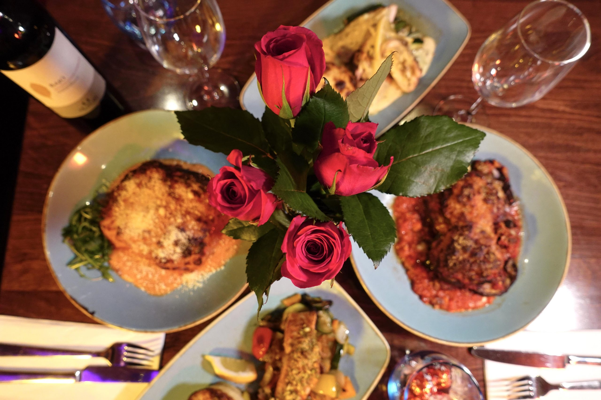
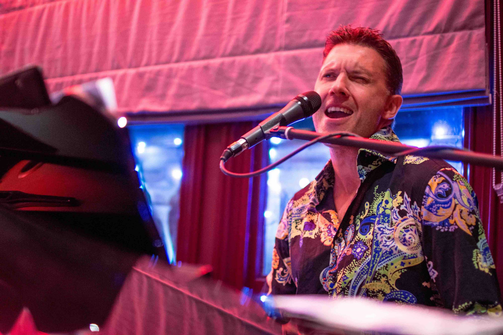

Celebrating 20 Years of De Luca!
Two decades. Thousands of meals. Countless memories. De Luca Cucina & Bar turns 20 this year — and we couldn't be more grateful to every single guest, team member, and supplier who has been part of the journey.
What started as a vision for great Italian food in Cambridge has grown into an award-winning restaurant, cocktail bar, and Piano Bar that has become a fixture of the city's dining scene. From our Skylight Restaurant to the rooftop terrace, from quiet weekday lunches to late Saturday nights at the Piano Bar, De Luca has always been about bringing people together over great food and drink.
Over the years we've been honoured with multiple TripAdvisor Travellers' Choice awards, a Best Bar accolade, and the trust of countless regulars who have made us their go-to for birthdays, anniversaries, date nights, and everything in between.
In 2021, we added artisan pizza and delivery to our offering — expanding the De Luca experience beyond our doors and into Cambridge homes. And we're not stopping there.
Thank you Cambridge. Here's to the next 20 years.


